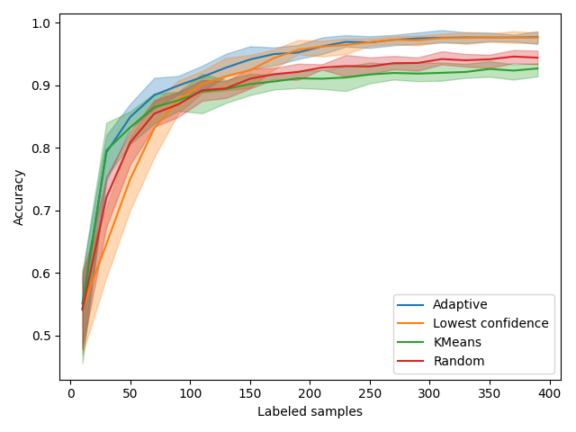
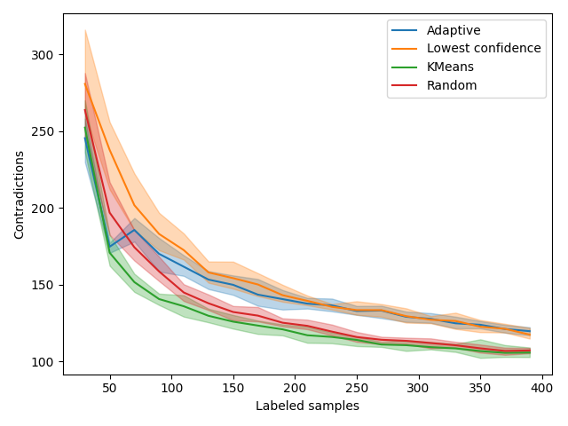
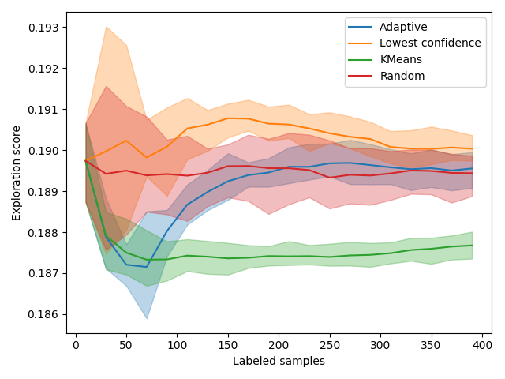

Note
Click here to download the full example code
Active Learning on Digit Recognition and Metrics¶
In this example, we run an experiment on real data and show how active learning can be monitored, given that in real life scenario there is no access to the ground truth of the test set. Based on these metrics, we identify two phases during this active learning experiment and define a custom query sampler that takes advantage of this.
Those are the necessary imports and initializations
from matplotlib import pyplot as plt
import numpy as np
from sklearn.datasets import load_digits
from sklearn.ensemble import RandomForestClassifier
from sklearn.model_selection import train_test_split
from sklearn.metrics import pairwise_distances
from cardinal.uncertainty import ConfidenceSampler
from cardinal.clustering import KMeansSampler
from cardinal.random import RandomSampler
from cardinal.plotting import plot_confidence_interval
from cardinal.base import BaseQuerySampler
np.random.seed(7)
The parameters of this experiment are:
batch_size is the number of samples that will be annotated and added to the training set at each iteration,
n_iter is the number of iterations in our simulation
We use the digits dataset and a RandomForestClassifier as model.
batch_size = 20
n_iter = 20
X, y = load_digits(return_X_y=True)
X /= 255.
n_classes = 10
model = RandomForestClassifier()
Experimental Metrics¶
We define a first metric based on contradictions. It has been observed that the number of samples on which the model changes his prediction from one iteration to the other is correlated to the improvement of accuracy. We want to verify this. Since the number of label prediction changes can be coarse, we use the absolute difference in prediction probabilities.
def compute_contradiction(previous_proba, current_proba):
return np.abs(current_proba - previous_proba).mean()
We define a second metric based on the distance between already labeled samples and our test set. The goal of this metric is measure how well our test set has been explored by our query sampling method so far. We expect uncertainty sampling to explore the sample space located nearby the decision boundary and show poor exploration property.
def compute_exploration(X_selected, X_test):
return pairwise_distances(X_selected, X_test).mean()
A New Custom Sampler¶
Let’s imagine what an ideal query sampler could look like by making the best of the samplers we already know. Uncertainty sampling is certainly an appealing method but in a previous example we have shown that it lacks exploration and can stay stuck in a local minimum for a while. On the other hand, K-Means sampling explore the space well but will probably fail at fine tuning our prediction model. In that context, it seems reasonable to first explore the sample space, say by using a KMeansSampler, and at some point shift to an exploitation mode where we fine tune our model using UncertaintySampler. We define an Adaptive sampler that does exactly this.
As a heuristic, let us say that 5 samples per class should be enough exploration. We set the sampler to explore until it has 50 samples and then switch to exploitation.
class AdaptiveQuerySampler(BaseQuerySampler):
def __init__(self, exploration_sampler, exploitation_sampler,
exploration_budget):
self.exploration_sampler = exploration_sampler
self.exploitation_sampler = exploitation_sampler
self.exploration_budget = exploration_budget
self.sampler = None
def fit(self, X_train, y_train):
if X_train.shape[0] <= self.exploration_budget:
self.sampler = self.exploration_sampler.fit(X_train, y_train)
else:
self.sampler = self.exploitation_sampler.fit(X_train, y_train)
return self
def select_samples(self, X):
return self.sampler.select_samples(X)
adaptive_sampler = AdaptiveQuerySampler(
KMeansSampler(batch_size), # Exploration
ConfidenceSampler(model, batch_size), # Exploitation
n_classes * 5
)
Core Active Learning Experiment¶
We now perform the experiment. We compare our adaptive model to random, pure exploration, and pure exploitation. We also monitor the metrics defined above.
samplers = [
('Adaptive', adaptive_sampler),
('Lowest confidence', ConfidenceSampler(model, batch_size)),
('KMeans', KMeansSampler(batch_size)),
('Random', RandomSampler(batch_size)),
]
figure_accuracies = plt.figure().number
figure_contradictions = plt.figure().number
figure_explorations = plt.figure().number
for i, (sampler_name, sampler) in enumerate(samplers):
all_accuracies = []
all_contradictions = []
all_explorations = []
for k in range(10):
X_train, X_test, y_train, y_test = \
train_test_split(X, y, test_size=500, random_state=k)
accuracies = []
contradictions = []
explorations = []
previous_proba = None
# For simplicity, we start with one sample of each class
_, selected = np.unique(y_train, return_index=True)
# We use binary masks to simplify some operations
mask = np.zeros(X_train.shape[0], dtype=bool)
indices = np.arange(X_train.shape[0])
mask[selected] = True
# The classic active learning loop
for j in range(n_iter):
model.fit(X_train[mask], y_train[mask])
# Record metrics
accuracies.append(model.score(X_test, y_test))
explorations.append(compute_exploration(X_train[mask], X_test))
# Contradictions depend on the previous iteration
current_proba = model.predict_proba(X_test)
if previous_proba is not None:
contradictions.append(compute_contradiction(
previous_proba, current_proba))
previous_proba = current_proba
sampler.fit(X_train[mask], y_train[mask])
selected = sampler.select_samples(X_train[~mask])
mask[indices[~mask][selected]] = True
all_accuracies.append(accuracies)
all_explorations.append(explorations)
all_contradictions.append(contradictions)
x_data = np.arange(10, batch_size * (n_iter - 1) + 11, batch_size)
plt.figure(figure_accuracies)
plot_confidence_interval(x_data, all_accuracies, label=sampler_name)
plt.figure(figure_contradictions)
plot_confidence_interval(x_data[1:], all_contradictions,
label=sampler_name)
plt.figure(figure_explorations)
plot_confidence_interval(x_data, all_explorations, label=sampler_name)
plt.figure(figure_accuracies)
plt.xlabel('Labeled samples')
plt.ylabel('Accuracy')
plt.gca().axvline(50, color='r')
plt.legend()
plt.tight_layout()
plt.figure(figure_contradictions)
plt.xlabel('Labeled samples')
plt.ylabel('Contradictions')
plt.gca().axvline(50, color='r')
plt.legend()
plt.tight_layout()
plt.figure(figure_explorations)
plt.xlabel('Labeled samples')
plt.ylabel('Exploration score')
plt.gca().axvline(50, color='r')
plt.legend()
plt.tight_layout()
plt.show()
- 
- 
- 
Discussion¶
Accuracies¶
In all the figures above, the vertical red line indicates when the adaptive method switches from exploration to exploitation.
We first look at accuracy. As expected, KMeansSampler, a purely exploration method is the best at the beginning but becomes as performant as random with time. Uncertainty sampling also behaves as expected by starting poorly and then becoming the best method.
Our AdaptiveQuerySampler combines the performance of both approaches to have the best performance!
Contradictions¶
Contradictions measures how much, when trained on new samples, a model agrees with its past predictions. A perfectly stable model should have consistent predictions given new samples so we expect this measure to converge toward 0 over time. Looking at the red Random curve and the green Clustering, it seems like contradictions are inversely proportional to accuracy. However, we notice an interesting trend when the adaptive model switches from exploration to exploitation. In fact, the number of contradictions seems to stall a bit and join the orange Uncertainty curve.
This effect is probably due to samples that are “far” from the training set. If the Uncertainty focuses on a given region of the sample space, it is likely that the samples far from those regions will be subject to more variability. By better exploring the space, KMeans sampling is less sensitive to these changes. In the end, contradictions seems related to accuracy but contradictions weighted by exploration may be a better proxy for accuracy. This subject remains opened to further research.
Exploration Scores¶
The exploration curve also displays interesting trends. Since those are distance, a good exploration method will have a low score. As expected, exploration-based methods have the lowest scores. In particular, KMeansSampler starts by decreasing and then goes up. At the same time, its performance starts stalling. This shift happens incidentally at the same time as our adaptive method shifts its method. This is obviously not random! This exploration metric can be used to decide when to change method.
Total running time of the script: ( 4 minutes 15.516 seconds)
Estimated memory usage: 10 MB